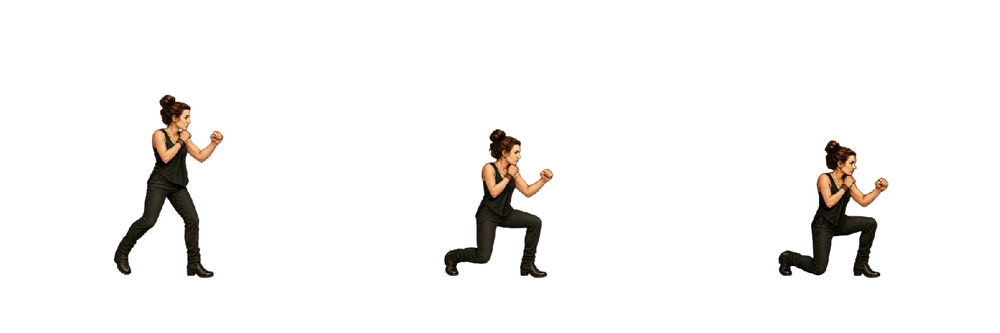
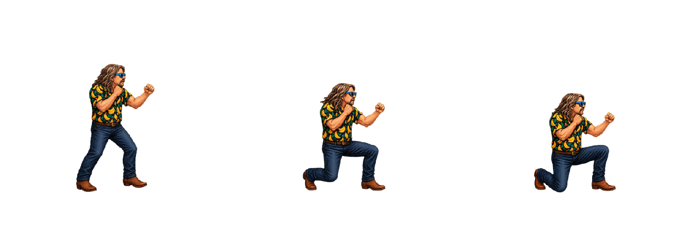
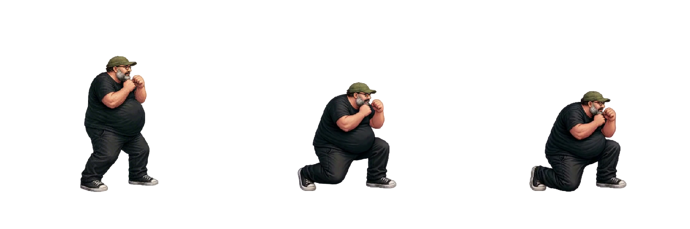
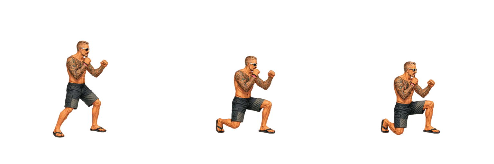
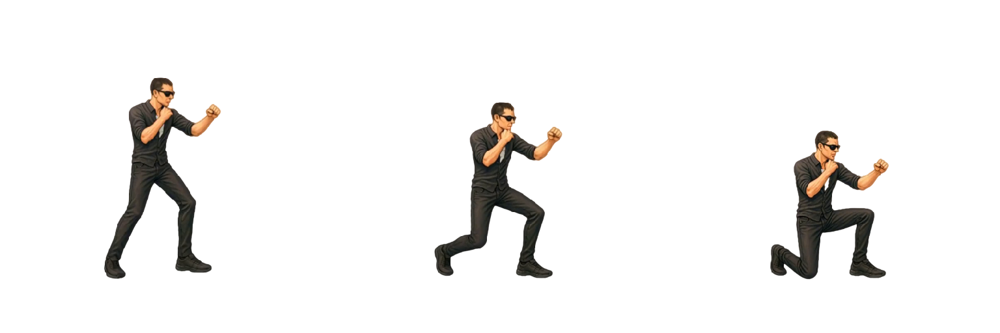
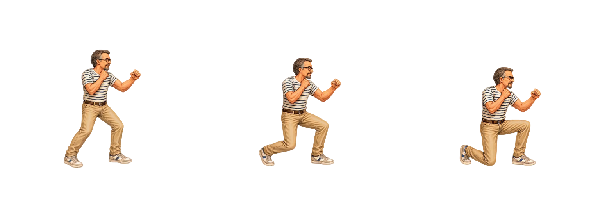
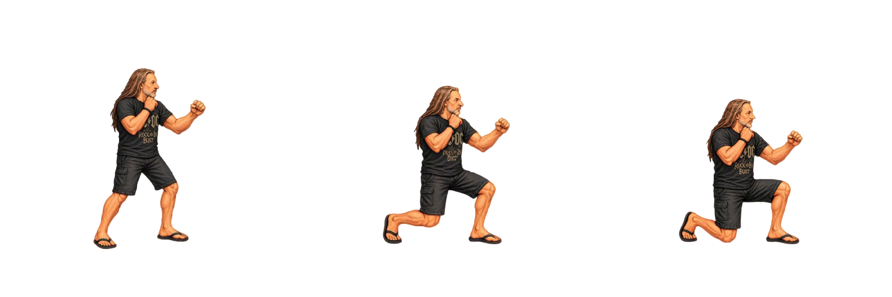

Timing Accovacciata
Tutti i sette personaggi eseguono la sequenza in 250 ms (0,25 s) a velocità 1×. FPS demo = numero frame × 4; ciascun frame dura 250 / numero frame ms, incluso l’ultimo.
Le pose mostrano ingresso, frame centrale e accovacciata finale. Senza Loop la posa finale resta visibile al termine; con Loop il ciclo dura 250 ms. La posa finale inizia un intervallo prima della fine; la durata indicata comprende l’intera sequenza. La rialzata inversa non è concatenata.
Frame, pixel, proporzioni in centimetri e correzioni Godot sono conservati. La postura bassa non viene ingrandita per compensarne l’altezza. “Riproduci tutte” riallinea anche i cicli successivi e i caricamenti progressivi; a 0,5× dura 0,5 s, a 2× dura 0,125 s. I timing Godot originali restano nel manifest.
Scarica CSV · Configurazione timing
| Personaggio | Ingresso / centro / fine | Frame | Durata | FPS demo | FPS Godot | Note |
|---|---|---|---|---|---|---|
| Arianna |  Frame 1 / 10 / 19 | 19 | 250 ms | 76 | 48 | Ingresso in accovacciata; recupero separato. |
| Bue |  Frame 1 / 4 / 7 | 7 | 250 ms | 28 | 24 | Ingresso in accovacciata; recupero separato. |
| Mangler |  Frame 1 / 13 / 25 | 25 | 250 ms | 100 | 48 | Mangler: scala reworked 0.85, senza recupero inverso. |
| Mileto |  Frame 1 / 7 / 13 | 13 | 250 ms | 52 | 24 | Ingresso in accovacciata; recupero separato. |
| Oscare |  Frame 1 / 5 / 9 | 9 | 250 ms | 36 | 24 | Ingresso in accovacciata; recupero separato. |
| Peirò |  Frame 1 / 6 / 11 | 11 | 250 ms | 44 | 24 | Ingresso in accovacciata; recupero separato. |
| Torpe |  Frame 1 / 4 / 7 | 7 | 250 ms | 28 | 24 | Ingresso in accovacciata; recupero separato. |